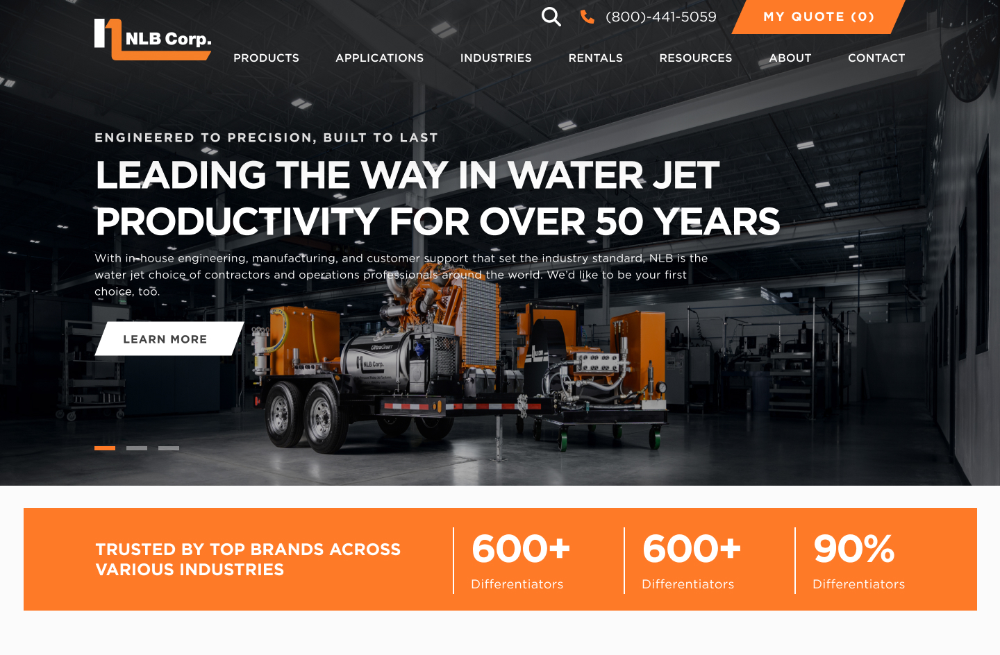
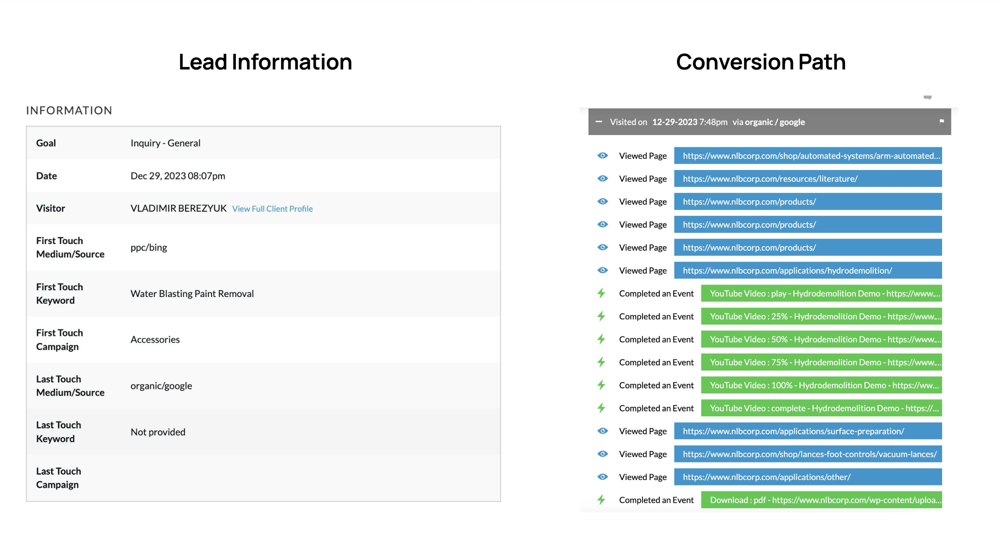
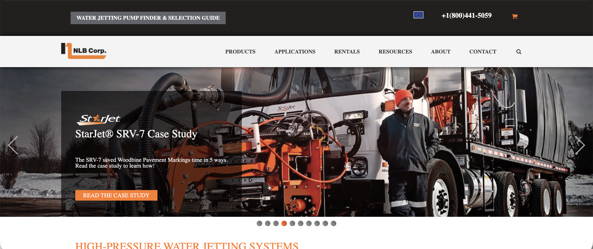
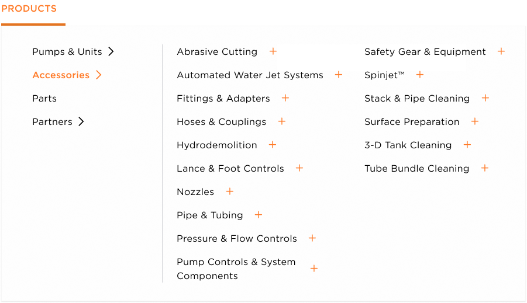
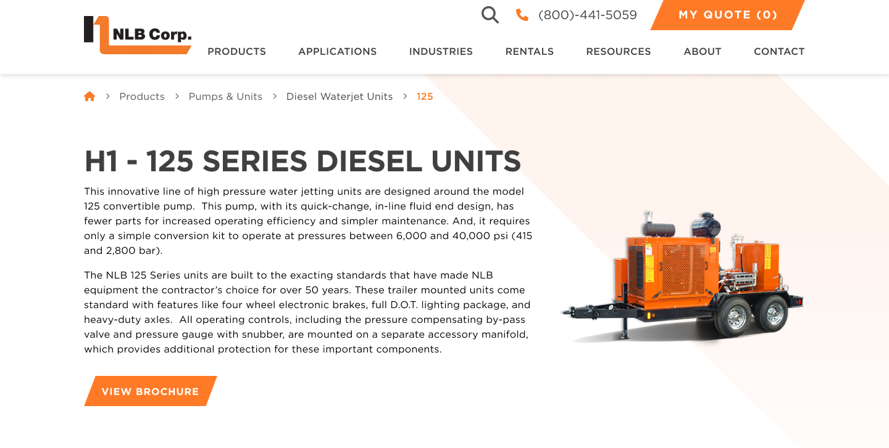
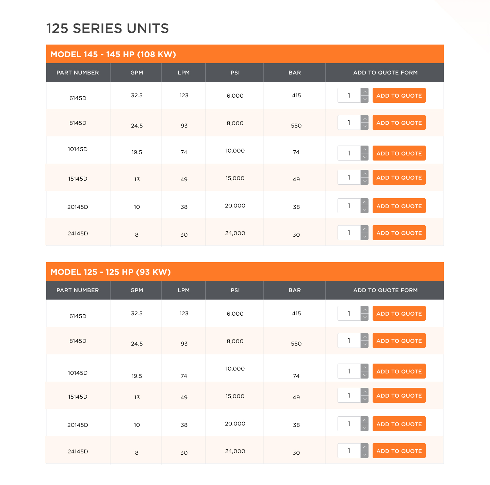
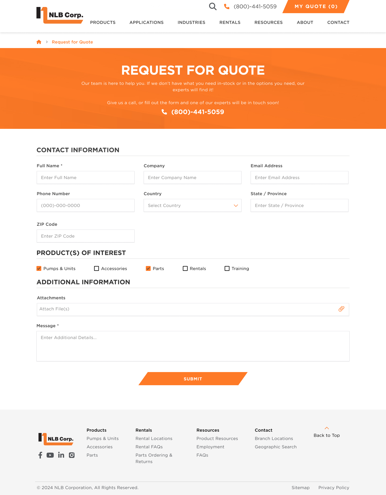
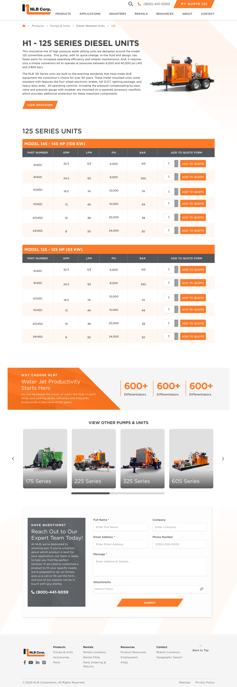
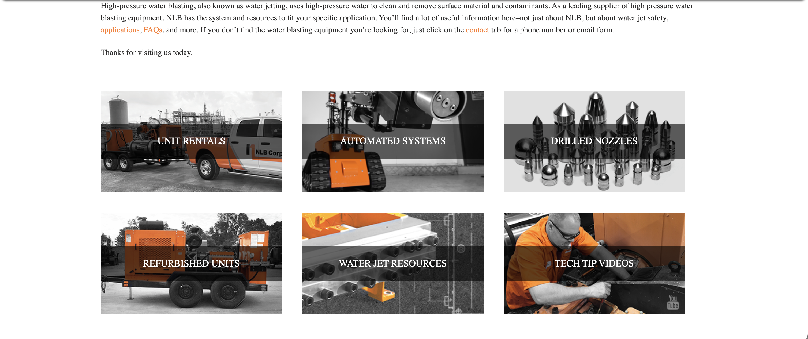

Redesigning a global water jetting manufacturer's website to cut information overload, simplify product discovery, and turn industrial buyers into leads.
Role
UX Designer
Timeline
Jan to Aug 2024, 8 months
Client
NLB Corp, global B2B
Industry
Water jetting manufacturing

Final homepage mockup (NLB-homepage.jpg)
The redesigned homepage: a simplified nav and a quote button that stays visible on every page.
Overview
50+ years of expertise, held back by a cluttered site
NLB Corp is one of the world's leading water jetting manufacturing companies, with over 50 years in the industry. Their products serve contractors and operations professionals across aquaculture, surface preparation, hydrodemolition, tank and tote cleaning, and safety gear, globally.
Despite a vast and technically superior product catalog, their website was driving users away. Cluttered navigation, an outdated visual language, and inefficient information architecture made product discovery nearly impossible, and conversion rates reflected it. With 62,228 site visits producing only 683 conversions in a 6-month window, the gap between traffic and leads was significant.
"Navigation is clunky and too much information. It feels like information overload with all the products listed."
Where things stood before the redesign
Six months of analytics, July 2023 to January 2024.
62,228
Site visits54% organic, 22% direct, 15% PPC, 9% other
683
Conversions60% RFQ page, 32% general inquiries, 8% employment pages
1.10%
Conversion rateB2B industrial benchmark is 2 to 4%
The question
How can UX design drive more leads for a complex B2B industrial website? By creating a seamless journey, clear calls to action, and optimized forms, UX can guide visitors toward requesting a quote, submitting an inquiry, or scheduling a consultation, closing the gap between high organic traffic and low lead volume.
Research
Understanding the industrial buyer journey
Three research methods shaped the strategy. The goal was to understand not just what was broken, but how industrial buyers discover products, evaluate solutions, and convert, often across multiple sessions and touchpoints.

Research artifacts (nlb-research.png)
Analytics data, lead tables, and conversion paths showing how people moved through the site before converting.
Analytics review
Audited 6 months of traffic and conversion data. The RFQ page drove 60% of all conversions, yet the old navigation made product-specific RFQ paths hard to find. Conversion path analysis showed buyers routinely visited the products page 3+ times before converting, a sign of confusion.
Competitive analysis
Analyzed Jetech, Karcher, and Gardner Denver for B2B industrial navigation patterns. Top performers used structured mega-menus, persistent quote CTAs, and spec-driven product tables, all of which NLB lacked. Filtering by pressure, flow, and power range was an industry standard NLB was missing.
Stakeholder interviews
One-on-one sessions with the internal team and key stakeholders. Buyers arrived knowing their application (hydrodemolition, surface prep) but couldn't quickly match it to the right NLB product line. The flat product listing, with no filterable specs, forced people to call or leave.
What we found
Navigation was the main barrier to converting
Every product sat at the top level with no grouping, creating instant overload. Buyers with a specific application in mind couldn't route themselves to the right category without scrolling past irrelevant items.
The hero image fought the message
A close-up product shot used as a decorative banner distracted from the headline instead of showing NLB's scale and authority, undermining credibility at the first impression.
Specs were buried, with no filtering
With 126+ pump configurations, buyers needed to filter by pressure, flow rate, and power. The old page listed everything in an unordered flat list, forcing people on tight timelines to read every entry.
Great resources nobody could find
NLB had a large library of PDFs, spec sheets, and technical literature, but no tags, filters, or search. Organic visitors (54% of traffic) looking for documentation often left without converting, even when the content existed.
Process
Five phases from discovery to launch

Old homepage (old-nlb-ui-homepage.png)
Before
New homepage (NLB-homepage.jpg)
After
Discovery
Analytics audit
IKOM and KOM
Keyword research
Competitive analysis
Information architecture
Design
Wireframing
Homepage design and reviews
Revisions
Interior page design and reviews
Prototyping
Build
Packaging design files
Design-to-dev handoff
Design QA, round 1
Populate
Content population
Design QA, round 2
Launch
Site launch
Constraints and the decisions they led to
Challenges
Keeping the experience consistent across devices with a catalog of 126+ configurations
Adding filters and tags without recreating the overload the redesign was meant to remove
Protecting SEO on high-traffic pages while restructuring the information architecture
Building a nav flexible enough for NLB's growing list of target industries
Decisions
A mega-menu with grouped subcategories, decluttering the top level while exposing full depth on hover
Progressive disclosure on product listings, showing filters only when relevant
Keeping existing URL structures during the restructure to protect organic traffic (54% of visits)
An Industries menu so buyers can self-route by application rather than product line
Solutions
Five features built for industrial buyers
Simplified navigation
A mega-menu with subcategories
The original nav put every product type at the top level, a wall of options on arrival. The redesign grouped them into subcategories (Pumps & Units, Accessories, Parts, Partners) that expand on hover, decluttering the primary nav while keeping full catalog depth. A persistent "My Quote (0)" button sits top right on every page so the conversion action is always visible.
About 60% fewer top-level nav items through subcategory grouping

nlb-new-nav.png
The new mega-menu with grouped subcategories
Filterable product listings
Spec-driven discovery
With 126+ pump configurations across pressure (6,000 to 40,000 psi), flow (4.4 to 32.5 gpm), and power (125 to 200 hp), buyers needed to filter without calling a rep. The redesigned listing page added Pressure, Flow, and Power range filters with a live count of matching entries.
126+ configurations now filterable by pressure, flow, and power

nlb_product_detail.jpeg
125 Series spec table

nlb_product_detail2.jpeg
Product page detail
Tagged resource library
A searchable PDF hub
Resources used to be a flat, uncategorized list of PDFs. The new library adds keyword search and a category filter so buyers can find spec sheets, rental brochures, and technical literature by product type. Each resource card shows a category tag, a file type badge, and a clear View action.
Goal: more resource engagement through search and filters
Redesigned RFQ form
A structured quote flow
The quote form now follows the buyer's workflow: contact details, then Products of Interest checkboxes (Pumps & Units, Accessories, Parts, Rentals, Training), then an open message field. Product pages gained an Add to Quote button inside the spec tables, so buyers build a quote list as they browse.
The RFQ page already drove 60% of conversions; the redesign targets a higher completion rate

nlb_rfq.jpg
The structured RFQ form

nlb_product_detail3.jpg
Add to Quote on product pages
Industry-based routing
Application-first navigation
A new Industries menu lets buyers start from their application (hydrodemolition, surface preparation, aquaculture, tank and tote cleaning, safety gear) before choosing products. It matches the core research finding: buyers arrive knowing their application, not the product they need.
5 priority industries in the nav, up from none
Outcomes
How success is measured
Success metrics were set up front and tied to the two core goals: more leads and better engagement with product information. Post-launch results are tracked against the 6-month baseline.
More RFQs
Lead conversionsQuote requests, inquiry forms, and consultation bookings against the baseline of 683
2 to 4%
Target conversion rateThe B2B industrial benchmark, up from a 1.10% baseline
More depth
Product page engagementTime on page, video interactions, and spec table use per product
Fewer exits
Form abandonmentThe structured RFQ flow aims to lower mid-form exits compared with the old form

Original site (old-nlb-ui-homepage2.png)
Before: the original NLB website
Redesigned site (nlb_product_detail.jpeg)
After: the redesigned NLB website
Before
Flat navigation with every product at the top level
A decorative hero image that distracted from the headline
126+ configurations in an unordered list with no filters
A resource library with no search, tags, or categories
A generic RFQ form with no product interest options or Add to Quote flow
A 1.10% conversion rate, well below the 2 to 4% benchmark
After
A grouped mega-menu plus an Industries menu for application-first routing
A full-bleed dark hero with a bold headline and a clear Learn More button
Product tables filterable by pressure, flow, and power range
A searchable resource library with category filters and file type badges
A structured RFQ with product interest checkboxes and Add to Quote on spec tables
A persistent My Quote button in the nav on every page
Reflection
What I'd do differently
The clearest challenge was scale. NLB's catalog is enormous: 126+ pump configurations, dozens of accessory categories, and years of technical documentation. The risk was that solving information overload would just move the overload somewhere else. The mega-menu and progressive filtering were the right answer, but they took restraint. Every new layer of organization had to earn its place.
If I started again, I'd push for usability testing with operations professionals and procurement buyers, not just internal stakeholders. Buyers visiting the products page 3+ times before converting points to confusion in product discovery. Watching that journey directly would have sharpened the filtering design and might have surfaced the need for a guided selector, like "Find My Pump," earlier.
The other lesson: resource libraries are underused on B2B industrial sites. With 54% organic traffic and a rich PDF library that wasn't surfaced well, a future phase could turn the library into a gated lead magnet, capturing intent that currently passes through without leaving contact information.